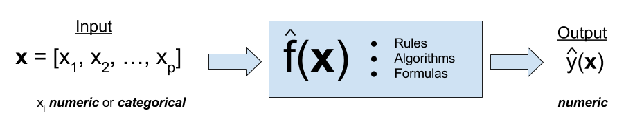

Logistic Regression
MSSC 6250 Statistical Machine Learning
Classification
- Linear regression assumes that the response \(Y\) is numerical.
- In many situations, \(Y\) is categorical.
- A process of predicting categorical response is known as classification.
Normal vs. COVID vs. Smoking
fake news vs. true news

Regression Function \(f(x)\) vs. Classifier \(C(x)\)


Classification Example
Given the training data \(\{(x_i, y_i)\}_{i=1}^n\), we build a classifier to predict whether people will default on their credit card payment \((Y)\) yes or no, based on monthly credit card balance \((X)\).


Why Not Linear Regression?
- Probability estimates can be outside \([0, 1]\).

Binary Logistic Regression
- First predict the probability of each category of \(Y\)
- Predict probability of
defaultusing a S-shaped curve.

Framing the Problem: Binary Responses
We use normal distribution for numerical \(y\). What distribution we can use for binary \(y\) that takes value 0 or 1?
- Each outcome
default\((y = 1)\) andnot default\((y = 0)\) is a Bernoulli variable. But,
- The probability of “success” \(\pi\) is not constant but varies with predictor values!
\[ y_i \mid x_i \stackrel{indep}{\sim} \text{Bernoulli}(\pi_i = \pi(x_i)) = \text{binomial}(m=1,\pi = \pi_i) \]
-
\(X =\)
balance. \(x_1 = 2000\) has a larger \(\pi_1 = \pi(2000)\) than \(\pi_2 = \pi(500)\) with \(x_2 = 500\) - Credit cards with a higher balance are more likely to be defaulted.

Logit function \(\eta = \text{logit}(\pi) = \ln\left(\frac{\pi}{1-\pi}\right)\)

Logistic (Sigmoid) Function \(\pi = \text{logistic}(\eta) = \frac{1}{1+\exp(-\eta)}\)

Probability Curve
What is the probability of default when the balance is 500? What about balance 2500?

- 500 balance: Pr(default) = 0
- 2000 balance: Pr(default) = 0.59
- 2500 balance: Pr(default) = 0.96
Receiver Operating Characteristic (ROC) Curve
- The ROC curve plots True Positive Rate (Sensitivity) vs. False Positive Rate (1 - Specificity)

library(ROCR)
# create an object of class prediction
pred <- ROCR::prediction(
predictions = pred_prob,
labels = Default$default)
# calculates the ROC curve
roc <- ROCR::performance(
prediction.obj = pred,
measure = "tpr",
x.measure = "fpr")
plot(roc, colorize = TRUE, lwd = 3)Area Under Curve (AUC)
Find the area under the curve:
## object of class 'performance'
auc <- ROCR::performance(
prediction.obj = pred,
measure = "auc")
auc@y.values[[1]]
[1] 0.95
Optimal Threshold
With Youden’s J index, the optimal threshold is \(3.18\%\).

Multinomial Logistic Regression
When classifying \(K > 2\) categories, we can consider multinomial logistic regression1.
The response should be nominal. If \(Y_i\) is ordinal, we should consider the ordinal regression.

Multinomial Logit - Probability Curve

- Normal and logistic density are symmetric, while Gumbel is right skewed.

Probability Curve

Probit and Complementary log-log Links

Other Topics
Repeated measures and binomial logistic regression
Regression diagnostics for binary data
Penalized logistic regression
Exponential family
Poisson regression